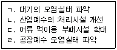
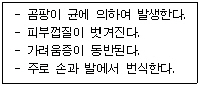

미용사(일반) (2005-10-02 기출문제)
1과목: 미용이론
1. 중국의 미용에 대해 틀린 것은?
- 당나라 시대에는 액황이라고 하여 이마에 발라 입체감을 살렸다.
- 홍장은 백분을 바른 후 다시 연지를 더 바르는 것이다.
- 십미도는 열 종류의 눈썹모양을 그린 것이다.
- 두발 형에는 쪽진머리, 큰머리, 조짐머리가 있었다.
(정답률: 68%)

2. 컬(curl)의 구성요소에 해당되지 않은 것은?
- 크레스트(crest)
- 베이스(base)
- 루프(loop)
- 스템(stem)
(정답률: 59%)
3. 다음 중 무대화장을 일컫는 화장법은?
- 데이타임 메이크업
- 그리스 페인트 메이크업
- 선번 메이크업
- 컬러 포토 메이크업
(정답률: 75%)
4. 콜드퍼머넌트 웨이브의 시술 중 프로세싱 솔루션(processing solution)에 해당 하는 것은?
- 제1액의 산화제
- 제1액의 환원제
- 제2액의 환원제
- 제2액의 산화제
(정답률: 51%)
5. 컬의 기본적인 스템(stem)이 아닌 것은?(오류 신고가 접수된 문제입니다. 반드시 정답과 해설을 확인하시기 바랍니다.)
- 풀 스템(full stem)
- 하프 스템(half stem)
- 논 스템(non stem)
- 롱 스템(long stem)
(정답률: 47%)
6. 화장은 목적에 따라 여러 가지로 분류한다. 이 중에서 데이터임 메이크업(daytime make-up)을 설명한 것은?
- 성장화장
- 스테이지 메이크업(stahe make-up)
- 사진을 찍을 경우의 화장
- 낮화장을 의미한다.
(정답률: 82%)
7. 모발의 색을 나타내는 색소로 입자형 색소는?
- 티로신(tyrosine)
- 멜라노사이트(melanocyte)
- 유멜라닌(eumelanin)
- 페오멜라닌(pheomelanin)
(정답률: 61%)
8. 비타민 중 거칠어지는 피부, 피부각화 이상에 의한 피부질환 치료에 사용되며 과용하면 탈모가 생기는 비타민 은?
- 비타민 A
- 비타민B1
- 비타민 C
- 비타민 D
(정답률: 57%)
9. 미용사가 손님에게 미안술을 시술 시 사전 피부분석하고 상태를 파악하는 항목 중 가장 거리가 먼 항목은 어느 것인가?
- 피부의 유형
- 피부의 상태
- 피부의 pH
- 피부의 흉터자국
(정답률: 83%)
10. 두발이 많이 상한 상태인 긴 모발의 손님에게 퍼머넌트 웨이브 시술시 처음 로드를 와인딩 해야 하는 부분은?
- 손님의 왼쪽에서부터 시작(left side part)
- 목덜미 중앙 윗부분부터(nape part)
- 두상의 제일 윗부분부터(top part)
- 뒷부분부터(back point)
(정답률: 46%)
11. 미용의 개념과 관계가 없는 것은?
- 물리적 또는 화학적 기교에 의하여 용모를 미려하게 하는 것
- 심신의 상태를 개선하고 호전시키는 진보적인 미를 개발하는 것
- 정형(plastic operation)에 의하여 진보적인 미를 개발하는 것
- 공중위생법에 규정된 이.미용에 관한 사항을 준수하는 것
(정답률: 48%)
12. 비듬에 대한 설명으로 적합한 것은?
- 두피 표피세표의 과도한 각질화가 직접적 원인이다.
- 건성비듬은 지나친 피지분비가 원인이 된다.
- 모든 비듬은 전염성이 없으므로 주의할 필요가 없다.
- 고주파 전류의 사용을 금해야 한다.
(정답률: 73%)
13. 삼한시대(三韓時代)의 머리형에 관한 설명 중 틀린 것은?
- 포로나 노비는 머리를 깎았다.
- 수장급은 관모를 썼다.
- 일반인에게는 상투를 틀게 했다.
- 계급의 차이 없이 자유롭게 했다.
(정답률: 89%)
14. 다음 중 아이론 부위 명칭이 아닌 것은?
- 그루브핸들
- 그루브
- 프롱
- 엣지
(정답률: 78%)
15. 블런트 커팅(blunt cutting)의 기법이 아닌 것은?
- 원랭스 커트(one-lenght)
- 스퀘어 커트(square cut)
- 그라데이션 커트(gradation cut)
- 스트로크 커트(stroke cut)
(정답률: 42%)
16. 빗을 두발 스트랜드의 뒷면에 직각으로 넣고 두피 쪽을 향해 빗을 내리누르듯이 빗질하여 머리카락을 세우는 것을 무엇이라 하는가?
- 리핑
- 브러쉬 아웃
- 백콤잉
- 콤 아웃
(정답률: 68%)
17. 에크팩에 대한 설명 중 맞는 것은?
- 지방, 레시틴, 콜레스트롤 등을 이용해서 미용 상의 효과를 높이기 위한 팩으로 보습작용과 표백작용이 있으며 지방을 보급해 준다.
- 당분과 단백질, 의산(개미산)등의 유기산이나 효소, 비타민C 등에 의한 수렴, 표백작용을 한다.
- 단백질의 교착작용을 이요해서 피부에 세정효과를 주고 잔주름을 없애주어 건조성 피부와 중년기의 쇠퇴한 피부에 효과적이다.
- 레몬, 토마토, 딸기, 사과 등을 잘라서 과즙에 함유된 유효성분을 이용한다.
(정답률: 49%)
18. 다음 중 레이어 커트(layer cut)의 시술 특징에 해당되는 것은?
- 두발 절단면의 외형 선은 일자로 형성된다.
- 슬라이스는 사선45도로 하여 직선으로 자른다.
- 전체적으로 층이 골고루 나타난다.
- 블로킹은 주로 4등분으로 한다.
(정답률: 70%)
19. 자외선등(Uitraviolet Lamp)을 이용한 미안술로 올바른 것은?
- 시술자와 고객은 보호안경과 아이패드를 착용한다.
- 가습적 장시간의 시술로 효과를 높인다.
- 파장은 650 ~140nm 정도의 것을 이용한다.
- 자외선등은 피부에서 30cm정도 거리를 두고 시술한다.
(정답률: 64%)
20. 두발염색시의 주의사항에 해당되지 않는 것은?
- 유기합성 염모제를 사용할 때에는 패치테스트를 해야 한다.
- 두피에 상처나 질환이 있을 때는 염색을 해서는 안 된다.
- 퍼머넨트 웨이브와 두발염색을 하여야 할 경우에는 두발 염색부터 반드시 먼저 해야 한다.
- 시술자 미용사는 반드시 고무장갑을 껴야한다.
(정답률: 76%)
2과목: 공중보건학
21. 우리나라에서 제2중간 숙주인 가재, 게를 통해 감염되는 기생충 질병은?
- 편충
- 폐흡충증
- 구충
- 회충
(정답률: 77%)
22. 지역사회의 보건수준을 비교할 때 쓰여 지는 지표가 아닌 것은?
- 영아사망율
- 평균수명
- 일반사망율
- 국세조사
(정답률: 77%)
23. 일반적으로 이.미용업소의 실내 쾌적 습도 범위로 가장 알맞은 것은?
- 10 ~ 20 %
- 20 ~ 40 %
- 40 ~ 70 %
- 70 ~ 90 %
(정답률: 74%)
24. 전염병예방법 중 제3군 전염병에 해당되는 것은?
- 황열
- B형 간염
- 후천성면역결핍증
- 뎅기열
(정답률: 61%)
25. 다음 중 수질오염 방지대책으로 묶인 것은?

- ㄱ,ㄴ,ㄷ
- ㄱ,ㄷ
- ㄴ,ㄹ
- ㄱ,ㄴ,ㄷ,ㄹ
(정답률: 62%)
26. 다음 중 만성적인 열중증을 무엇이라 하는가?
- 열허탈증(heat exhaustion)
- 열쇠약증(heat prostration)
- 열경련(heat cramp)
- 울열증(heat stroke)
(정답률: 49%)
27. 열에 가장 쉽게 파괴되는 비타민은?
- 비타민A
- 비타민B
- 비타민C
- 비타민D
(정답률: 59%)
28. 세균성 식중독의 특성이 아닌 것은?
- 2차 감염률이 낮다.
- 잠복기가 길다.
- 다량의 균이 발생 한다.
- 수인성 전파는 드물다.
(정답률: 51%)
29. 결핵관리상 효율적인 방법으로 가장 거리가 먼 것은?
- 환자의 조기발견
- 집회장소의 철저한 소독
- 환자의 등록치료
- 예방접종의 철저
(정답률: 42%)
30. 위생해충인 파리에 의해서 전염될 수 있는 전염병이 아닌 것은?
- 장티푸스
- 발진열
- 콜레라
- 세균성이질
(정답률: 44%)
3과목: 소독학
31. 이.미용업소에서 공기 중 비말전염으로 가장 쉽게 옮겨질 수 있는 전염병은?
- 인플루엔자
- 대장균
- 뇌염
- 장티푸스
(정답률: 71%)
32. 역성비누의 설명 중 틀린 것은?
- 독성이 적다.
- 냄새가 거의 없다.
- 세정력이 강하다.
- 물에 잘 녹는다.
(정답률: 55%)
33. 멸균의 의미로 가장 옳은 표현은?
- 병원성 균의 증식억제
- 병원성 균의 사멸
- 아포를 포함한 모든 균의 사멸
- 모든 세균의 독성만의 파괴
(정답률: 69%)
34. 각종 살균제와 그 기전을 연결하였다. 틀린 항은?
- 과산화수소(H2O2) - 가수분해
- 생석회(CaO) - 균체 단백질 변성
- 알콜(C2H5OH) - 대사저해 작용
- 페놀(C5H5OH) - 단백질 응고
(정답률: 29%)
35. E.O(Ethylene Oxide)가스 소독이 갖는 장점이라 할 수 있는 것은?
- 소독에 드는 비용이 싸다
- 일반세균은 물론 아포까지 불활성화 시킬 수 있다.
- 소독 절차 및 방법이 쉽고 간단하다.
- 소독 후 즉시 사용이 가능하다.
(정답률: 45%)
36. 다음 중 상처나 피부 소독에 가장 적당한 것은?
- 크레졸비누액
- 포르말린수
- 과산화수소수
- 차아염소산나트륨
(정답률: 93%)
37. 결핵환자가 사용한 침구류 및 의류의 가장 간편한 소독 방법은?
- 일광 소독
- 자비 소독
- 석탄산 소독
- 크레졸 소독
(정답률: 43%)
38. 살균력과 침투성은 약하지만 자극이 없고 발포작용에 의해 구강이나 상처소독에 주로 사용되는 소독제는?
- 페놀
- 염소
- 과산화수소수
- 알콜
(정답률: 77%)
39. 이.미용업소 기구소독시 가장 완전한 방법은?
- 고압증기 멸균
- 건억멸균
- 자비소독
- 일광소독
(정답률: 58%)
40. 승홍을 희석하여 소독에 사용하고자 한다. 경제적 희석배율은 어느 정도로 되는가?(단, 아포살균 제외)
- 500배
- 1,000배
- 1,500배
- 2,000배
(정답률: 66%)
4과목: 피부학
41. 다음 보기 중 피부의 감각기관인 촉감점이 가장 적게 분포하는 것은?
- 손끝
- 입술
- 혀끝
- 발바닥
(정답률: 65%)
42. 다음은 어떤 피부질환에 대한 설명인가?

- 흉터
- 무좀
- 홍반
- 사마귀
(정답률: 83%)
43. 생명력이 없는 상태의 무색, 무핵층으로서 손바닥과 발바닥에 주로 있는 층은?
- 각질층
- 과립층
- 투명층
- 기저층
(정답률: 79%)
44. 향료 사용의 설명으로 옳지 않은 것은?
- 향 발산을 목적으로 맥박이 뛰는 손목이나 목에 분사한다.
- 자외선에 반응하여 피부에 광알레르기를 유발시킬 수도 있다.
- 색소 침착된 피부에 향료를 분사하고 자외선을 받으면 색소침착이 완화된다.
- 향수 사용시 시간이 지나면서 향의 농도가 변하는데 그것은 조합향료 때문이다.
(정답률: 72%)
45. 유성화운데이션의 기능이 아닌 것은?
- 유연효과가 좋아 하절기에 적당하다.
- 피부에 퍼짐성이 좋다.
- 피부에 부착성이 좋다.
- 심한 기미나 주근깨 등의 피부반점을 커버하기에 좋다.
(정답률: 48%)
46. 오일의 설명으로 옳은 것은?
- 식물성 오일-향은 좋으나 부패하기 쉽다.
- 동물성 오일 -무색투명하고 냄새가 없다.
- 광물성 오일 -색이 진하며 피부 흡수가 늦다.
- 합성 오일 - 냄새가 나빠 정제한 것을 사용한다.
(정답률: 58%)
47. 벨록 피부염(berlock dermatitis)이란?
- 향료에 함유된 요소가 원인인 광접촉 피부염이다.
- 눈 주위부터 볼에 걸쳐 다수 군집하여 생기는 담갈색의 색소반이다.
- 안면이나 목에 발생하는 청자갈색조의 불명료한 색소 침착이다.
- 절상이나 까진 상처의 전후처치를 잘못하면 그 부분에 색소의 침착이다.
(정답률: 37%)
48. 단파장으로 가장 강한 자외선이며, 원래는 오존층에 완전 흡수되어 지표면에 도달되지 않았으나 오존층의 파괴로 인해 인체와 생태계에 많은 영향을 미치는 자외선은?
- UV A
- UV B
- UV C
- UV D
(정답률: 43%)
49. 비타민 C가 인체에 미치는 효과가 아닌 것은?
- 피부의 멜라닌 색소의 생성을 억제시킨다.
- 혈색을 좋게 하여 피부에 광택을 준다.
- 호르몬의 분비를 억제시킨다.
- 피부의 과민증을 억제하는 힘과 해독작용이 있다.
(정답률: 54%)
50. 얼굴의 피지가 세안으로 없어졌다가 원상태로 회복될 때까지의 일반적인 소요시간은?
- 10분 정도
- 30분 정도
- 2시간 정도
- 5시간 정도
(정답률: 66%)
5과목: 공중위생법규
51. 다음 중 이용사 또는 미용사의 업무범위에 관한 필요한 사항을 정한 것은?
- 대통령령
- 국무총리령
- 보건복지부령
- 노동부령
(정답률: 70%)
52. 위생교육을 실시한 전문기관 또는 단체가 교육에 관한 기록을 보관. 관리하여야 하는 기간은?
- 1월
- 6월
- 1년
- 2년
(정답률: 66%)
53. 과태료처분에 불복이 있는 자는 그 처분이 있음을 안날로부터 며칠 이내에 처분 권자에게 이의를 제기할 수 있는가?
- 10일
- 20일
- 30일
- 50일
(정답률: 78%)
54. 다음 중 이.미용업자에게 과태료를 부과징수 할 수 있는 처분 권자에 해당되지 않는 자는?
- 보건복지부장관
- 시장
- 군수
- 구청장
(정답률: 83%)
55. 공중위생영업자의 지위를 승계한 자가 시장. 군수 또는 구청장에게 신고해야 하는 기간은?
- 15일 이내
- 1월 이내
- 3월 이내
- 6월 이내
(정답률: 72%)
56. 공중위생영업자 단체의 설립에 관한 설명 중 관계가 먼 것은?
- 영업의 종류별로 설립한다.
- 영업의 단체이익을 위하여 설립한다.
- 전국적인 조직을 갖는다.
- 국민보건향상의 목적을 갖는다.
(정답률: 53%)
57. 이.미용업 종사자로 위생교육을 받아야 하는 자는?
- 공중위생 영업에 종사자로 처음 시작하는 자
- 공중위생 영업에 6개월 이상 종사자
- 공중위생 영업에 2년 이상 종사자
- 공중위생 영업을 승계한 자
(정답률: 54%)
58. 영업소에서 무자격 안마사로 하여금 손님에게 안마행위를 하였을 때 1차 위반시 행정처분은?
- 경고
- 영업정지 15일
- 영업정지 1월
- 영업장 폐쇄
(정답률: 33%)
59. 이.미용업자의 준수사항 중 옳은 것은?
- 업소 내에서는 이.미용 보조원의 명부만 비치하고 기록 관리하면 된다.
- 업소 내 게시물에는 준수사항이 포함된다.
- 면도기는 1회용 면도날을 손님 1인에게 사용해야 한다.
- 손님이 사용하는 앞가리개는 반드시 흰색이어야 한다.
(정답률: 88%)
60. 이.미용업소의 시설 및 설비 기준으로 적당한 것은?
- 소독을 한 기구와 소독을 하지 아니한 기구를 구분하여 보관할 있는 용기를 비치하여야 한다.
- 적외선 살균기를 갖추어야 한다.
- 의자와 의자사이에 간이 칸막이를 설치할 수 있다.
- 영업소 내에 2개소 이내의 별실을 설치할 수 있다.
(정답률: 81%)